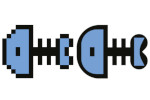
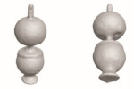
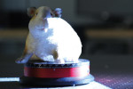
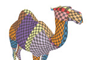
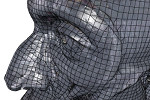
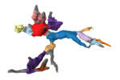
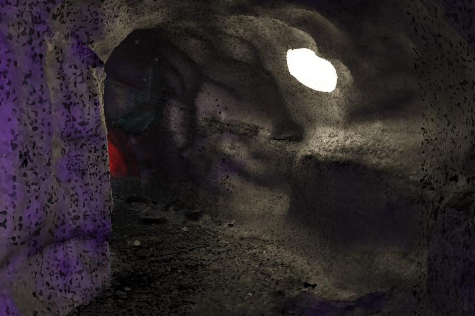
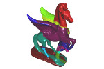
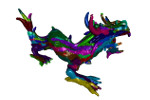

Welcome
I am a team manager for virtual function development in the area of assisted and automated driving. My team provides technical solutions that allow our systems engineers to work more efficiently, comfortably, and safely. Prior to that, I held several positions in academia at various international universities (TU Dresden, New York University, University of British Columbia). My research interests include mesh and 3D scan processing along with related fields in computer graphics and geometry processing.
I am not available as a reviewer at this time.
CV
| since 10/2022 | Team Manager, IAV GmbH, Ingolstadt, Germany |
| 03/2020 - 10/2022 | Development Engineer, IAV GmbH, Ingolstadt, Germany |
| 02/2019 - 01/2020 | Postdoctoral Research Fellow at UBC, Digital Geometry Processing (Alla Sheffer) |
| 10/2014 - 01/2019 | Research Associate at TU Dresden, Computer Graphics and Visualization |
| 10/2018 | Conferment of doctorate (Dr.-Ing.) |
| 08/2018 | Fellow of the German Academic Exchange Service |
| 07/2017 | Scholarship of the Graduate Academy / TU Dresden (Travel Awards) |
| 07/2016 - 01/2017 | Research visit at New York University, Courant Institute of Mathematical Sciences (Daniele Panozzo), Fellow of the German Academic Exchange Service |
| 2014/15 | Enno Heidebroek Certificate (awarded to the best graduates of Engineering courses) |
| 09/2014 | Master's Thesis "Improving JPEG Compression with Regression Tree Fields" |
| 2012/13 | IBM-Price for the best Bachelor's Thesis in Media Computer Science |
| 2009 - 2014 | Studies of Media Computer Science at TU Dresden |
| 2008 | G. E. Lessing Medal (awarded to the best high school graduates) |
Teaching at TU Dresden
I lectured the following courses:- Computer Graphics I (real-time rendering, geometry processing, optimization problems): Winter term 2017
- Computer Graphics I: Winter term 2018
- Computer Graphics II (Implicit surfaces, articulated objects, rigging, skinning, subdivision surfaces, structured light scanning): Summer terms 2015, 2016, 2017, 2018
- Computer Graphics III (physically based rendering): Winter term 2015
- Research Directions (structured light scanning): Summer term 2015
- Highly parallel computation of simulations with CUDA and OpenCL (introduction to OpenGL and CUDA interop): Winter terms 2014, 2015
- Practical courses with focus on mobile AR (summer term 2018), distributed VR games (winter term 2017), AR in fabrication (summer term 2017), cross-scale visualization (winter term 2015)
- Introduction to computer graphics: Summer terms 2011, 2012, 2013, 2014
- Scientific Visualization: Winter terms 2011, 2012, 2013
- 9 undergrad students
- 2 Master's students
- 2 PhD students (informally)
Publications
-

PolyFit: Perception-aligned Vectorization of Raster Clip-art via Intermediate Polygonal Fitting
Edoardo A. Dominici, Nico Schertler, Jonathan Griffin, Shayan Hoshyari, Leonid Sigal, Alla Sheffer
SIGGRAPH 2020
Project Page -

Front2Back: Single View 3D Shape Reconstruction via Front to Back Prediction
Yuan Yao, Nico Schertler, Enrique Rosales, Helge Rhodin, Leonid Sigal, Alla Sheffer
CVPR 2020
[PDF] -  High-Quality Mesh Generation from 3D Scans for Surface Analysis, Ph.D. Thesis, 2018
-

Generalized Motorcycle Graphs for Imperfect Quad-Dominant Meshes
Nico Schertler, Daniele Panozzo, Stefan Gumhold, Marco Tarini
ACM Transactions on Graphics (Proceedings of SIGGRAPH 2018)
[PDF], [Supplemental], [Code], [Slides] -

Field-Aligned Online Surface Reconstruction
Nico Schertler, Marco Tarini, Wenzel Jakob, Misha Kazhdan, Stefan Gumhold, Daniele Panozzo
ACM Transactions on Graphics (Proceedings of SIGGRAPH 2017)
[PDF], [Supplemental], [Video], [Code], [Slides] -

Deterministically Defining Chambers in 3D-Scans of Caves
Nico Schertler, Manfred Buchroithner, Donald McFarlane, Guy van Rentergem, Joyce Lundberg, Stefan Gumhold
International Congress of Speleology, 2017
[Paper], [Poster], [Code] -
Chamber Recognition in Cave Data Sets
Nico Schertler, Manfred Buchroithner, Stefan Gumhold
Eurographics 2017
[PDF], [Video], [Code], [Slides] -

Visualization of Scanned Cave Data with Global Illumination
Nico Schertler, Mirko Salm, Joachim Staib, Stefan Gumhold
Workshop on Visualisation in Environmental Sciences, 2016
[PDF] (the definitive version is available at EG DigLib and Wiley Online Library), [Slides] -

Towards Globally Optimal Normal Orientations for Large Point Clouds
Nico Schertler, Bogdan Savchynskyy, Stefan Gumhold
Computer Graphics Forum, 2016
[Paper], [Supplementary], [Video], [Code], [Slides] -

Global Optimality for Streaming Orientation of Point Cloud Normals
Nico Schertler, Bogdan Savchynskyy, Stefan Gumhold
Poster on Symposium on Geometry Processing, 2015
[PDF]